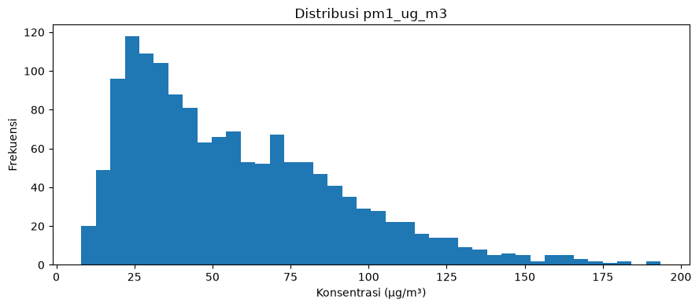
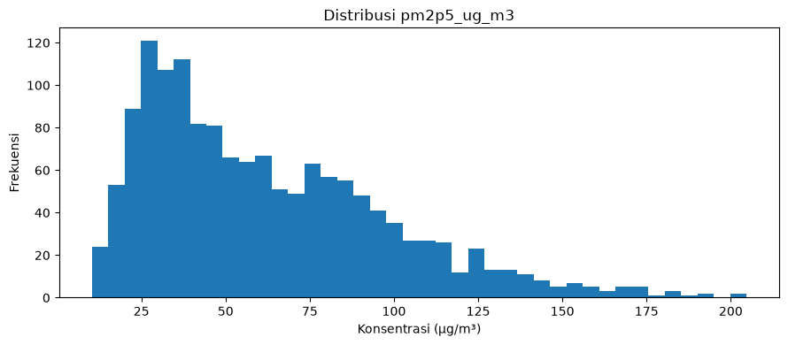
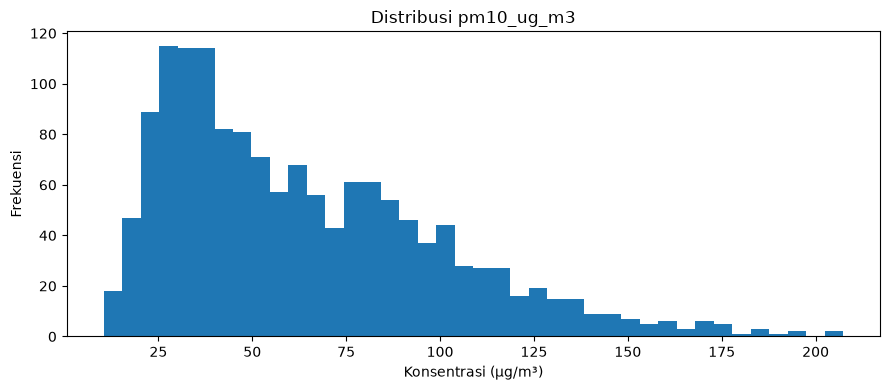
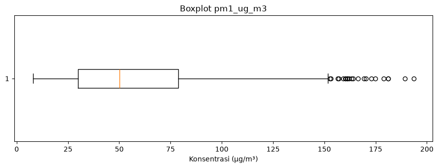
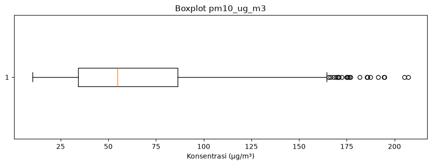
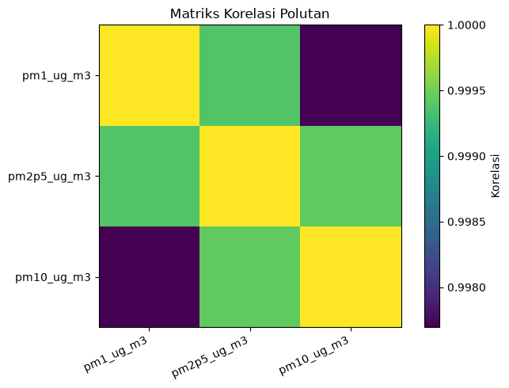

01 — Data Understanding: Kualitas Udara Lamongan#
Notebook ini digunakan untuk memahami karakteristik awal dataset kualitas udara Kabupaten Lamongan sebelum tahap EDA dan time series.
Sumber: CAMS Global Atmospheric Composition Forecasts (Copernicus Atmosphere Data Store)
Wilayah: Kabupaten Lamongan, Jawa Timur
Koordinat titik data: latitude -7.2, longitude 112.4
Periode aktual: 29 Agustus 2025 – 29 Agustus 2026
Polutan: PM1, PM2.5, PM10
1. Tujuan#
Tahap Data Understanding bertujuan mengetahui ukuran dataset, struktur kolom, periode, lokasi, tipe data, missing value, duplikasi, nilai tidak valid, statistik deskriptif, dan outlier sebelum analisis lanjutan.
import pandas as pd
import numpy as np
import matplotlib.pyplot as plt
pd.set_option('display.max_columns', None)
pd.set_option('display.float_format', lambda x: f'{x:,.3f}')
DATA_PATH = '../data/data_lamongan_clean.csv'
df = pd.read_csv(DATA_PATH)
df['valid_time'] = pd.to_datetime(df['valid_time'], errors='coerce')
pollutants = ['pm1_ug_m3', 'pm2p5_ug_m3', 'pm10_ug_m3']
print(f'Ukuran dataset: {len(df):,} baris × {df.shape[1]} kolom')
Ukuran dataset: 1,464 baris × 6 kolom
2. Informasi Dataset#
print('='*60)
print('INFORMASI DATASET')
print('='*60)
print(f'Jumlah baris : {df.shape[0]:,}')
print(f'Jumlah kolom : {df.shape[1]}')
print('\nKolom:')
for c in df.columns: print('-', c)
print('\n5 data pertama:')
display(df.head())
print('\n5 data terakhir:')
display(df.tail())
============================================================
INFORMASI DATASET
============================================================
Jumlah baris : 1,464
Jumlah kolom : 6
Kolom:
- valid_time
- latitude
- longitude
- pm1_ug_m3
- pm2p5_ug_m3
- pm10_ug_m3
5 data pertama:
| valid_time | latitude | longitude | pm1_ug_m3 | pm2p5_ug_m3 | pm10_ug_m3 | |
|---|---|---|---|---|---|---|
| 0 | 2025-08-29 00:00:00 | -7.200 | 112.400 | 58.889 | 64.675 | 67.464 |
| 1 | 2025-08-29 06:00:00 | -7.200 | 112.400 | 23.508 | 26.348 | 27.369 |
| 2 | 2025-08-29 12:00:00 | -7.200 | 112.400 | 78.598 | 84.529 | 86.252 |
| 3 | 2025-08-29 18:00:00 | -7.200 | 112.400 | 76.834 | 83.164 | 85.729 |
| 4 | 2025-08-30 00:00:00 | -7.200 | 112.400 | 84.052 | 90.816 | 93.775 |
5 data terakhir:
| valid_time | latitude | longitude | pm1_ug_m3 | pm2p5_ug_m3 | pm10_ug_m3 | |
|---|---|---|---|---|---|---|
| 1459 | 2026-08-28 18:00:00 | -7.200 | 112.400 | 32.469 | 36.573 | 38.829 |
| 1460 | 2026-08-29 00:00:00 | -7.200 | 112.400 | 72.169 | 77.297 | 79.546 |
| 1461 | 2026-08-29 06:00:00 | -7.200 | 112.400 | 24.200 | 28.542 | 30.601 |
| 1462 | 2026-08-29 12:00:00 | -7.200 | 112.400 | 17.732 | 22.072 | 24.887 |
| 1463 | 2026-08-29 18:00:00 | -7.200 | 112.400 | 24.888 | 28.733 | 30.978 |
3. Tipe Data#
display(df.dtypes.to_frame('dtype'))
df.info()
| dtype | |
|---|---|
| valid_time | datetime64[us] |
| latitude | float64 |
| longitude | float64 |
| pm1_ug_m3 | float64 |
| pm2p5_ug_m3 | float64 |
| pm10_ug_m3 | float64 |
<class 'pandas.DataFrame'>
RangeIndex: 1464 entries, 0 to 1463
Data columns (total 6 columns):
# Column Non-Null Count Dtype
--- ------ -------------- -----
0 valid_time 1464 non-null datetime64[us]
1 latitude 1464 non-null float64
2 longitude 1464 non-null float64
3 pm1_ug_m3 1464 non-null float64
4 pm2p5_ug_m3 1464 non-null float64
5 pm10_ug_m3 1464 non-null float64
dtypes: datetime64[us](1), float64(5)
memory usage: 68.8 KB
4. Periode dan Lokasi#
print('Mulai :', df['valid_time'].min())
print('Selesai:', df['valid_time'].max())
print('Durasi :', df['valid_time'].max() - df['valid_time'].min())
print('Latitude unik :', df['latitude'].unique())
print('Longitude unik:', df['longitude'].unique())
print('Timestamp unik:', df['valid_time'].nunique())
Mulai : 2025-08-29 00:00:00
Selesai: 2026-08-29 18:00:00
Durasi : 365 days 18:00:00
Latitude unik : [-7.2]
Longitude unik: [112.4]
Timestamp unik: 1464
5. Deskripsi Variabel#
Kolom |
Keterangan |
Satuan |
|---|---|---|
|
Waktu data |
waktu |
|
Lintang lokasi |
derajat |
|
Bujur lokasi |
derajat |
|
Particulate Matter ≤ 1 µm |
µg/m³ |
|
Particulate Matter ≤ 2.5 µm |
µg/m³ |
|
Particulate Matter ≤ 10 µm |
µg/m³ |
6. Missing Value#
missing = pd.DataFrame({'jumlah': df.isna().sum(), 'persentase': df.isna().mean()*100})
display(missing)
print('Total missing:', int(df.isna().sum().sum()))
| jumlah | persentase | |
|---|---|---|
| valid_time | 0 | 0.000 |
| latitude | 0 | 0.000 |
| longitude | 0 | 0.000 |
| pm1_ug_m3 | 0 | 0.000 |
| pm2p5_ug_m3 | 0 | 0.000 |
| pm10_ug_m3 | 0 | 0.000 |
Total missing: 0
7. Duplikasi#
print('Jumlah baris duplikat:', int(df.duplicated().sum()))
Jumlah baris duplikat: 0
8. Nilai Tidak Valid#
Konsentrasi PM tidak boleh negatif secara fisik. Nilai negatif dipisahkan dari outlier statistik agar tidak langsung disimpulkan sebagai data salah hanya karena ekstrem.
invalid = pd.DataFrame(index=pollutants)
invalid['negative_count'] = [(df[c] < 0).sum() for c in pollutants]
invalid['negative_percent'] = [(df[c] < 0).mean()*100 for c in pollutants]
display(invalid)
print('Baris dengan minimal satu PM negatif:', int((df[pollutants] < 0).any(axis=1).sum()))
| negative_count | negative_percent | |
|---|---|---|
| pm1_ug_m3 | 0 | 0.000 |
| pm2p5_ug_m3 | 0 | 0.000 |
| pm10_ug_m3 | 0 | 0.000 |
Baris dengan minimal satu PM negatif: 0
9. Statistik Deskriptif#
stats = df[pollutants].describe().T
stats['median'] = df[pollutants].median()
stats = stats[['count','mean','median','std','min','max']]
display(stats)
| count | mean | median | std | min | max | |
|---|---|---|---|---|---|---|
| pm1_ug_m3 | 1,464.000 | 57.529 | 50.124 | 33.979 | 8.040 | 193.528 |
| pm2p5_ug_m3 | 1,464.000 | 62.028 | 53.589 | 35.869 | 10.248 | 204.640 |
| pm10_ug_m3 | 1,464.000 | 63.610 | 54.827 | 36.421 | 10.407 | 207.295 |
10. Deteksi Outlier dengan IQR#
Outlier statistik dihitung dengan batas Q1 − 1.5×IQR dan Q3 + 1.5×IQR. Outlier tidak otomatis dihapus karena nilai ekstrem dapat mencerminkan kondisi polusi yang nyata.
rows=[]
for c in pollutants:
q1=df[c].quantile(.25); q3=df[c].quantile(.75); iqr=q3-q1
lo=q1-1.5*iqr; hi=q3+1.5*iqr
mask=(df[c]<lo)|(df[c]>hi)
rows.append({'variable':c,'Q1':q1,'Q3':q3,'IQR':iqr,'batas_bawah':lo,'batas_atas':hi,'outlier_count':int(mask.sum()),'outlier_percent':mask.mean()*100})
outlier_summary=pd.DataFrame(rows)
display(outlier_summary)
| variable | Q1 | Q3 | IQR | batas_bawah | batas_atas | outlier_count | outlier_percent | |
|---|---|---|---|---|---|---|---|---|
| 0 | pm1_ug_m3 | 29.858 | 78.798 | 48.939 | -43.550 | 152.206 | 22 | 1.503 |
| 1 | pm2p5_ug_m3 | 33.187 | 84.655 | 51.468 | -44.015 | 161.857 | 22 | 1.503 |
| 2 | pm10_ug_m3 | 34.235 | 86.409 | 52.174 | -44.026 | 164.670 | 22 | 1.503 |
11. Distribusi Polutan#
for c in pollutants:
plt.figure(figsize=(9,4))
plt.hist(df[c].dropna(), bins=40)
plt.title(f'Distribusi {c}')
plt.xlabel('Konsentrasi (µg/m³)')
plt.ylabel('Frekuensi')
plt.tight_layout()
plt.show()



12. Boxplot#
for c in pollutants:
plt.figure(figsize=(9,3.5))
plt.boxplot(df[c].dropna(), vert=False)
plt.title(f'Boxplot {c}')
plt.xlabel('Konsentrasi (µg/m³)')
plt.tight_layout()
plt.show()
/tmp/ipykernel_35492/3705963827.py:3: MatplotlibDeprecationWarning: vert: bool was deprecated in Matplotlib 3.11 and will be removed in 3.13. Use orientation: {'vertical', 'horizontal'} instead.
plt.boxplot(df[c].dropna(), vert=False)

/tmp/ipykernel_35492/3705963827.py:3: MatplotlibDeprecationWarning: vert: bool was deprecated in Matplotlib 3.11 and will be removed in 3.13. Use orientation: {'vertical', 'horizontal'} instead.
plt.boxplot(df[c].dropna(), vert=False)
/tmp/ipykernel_35492/3705963827.py:3: MatplotlibDeprecationWarning: vert: bool was deprecated in Matplotlib 3.11 and will be removed in 3.13. Use orientation: {'vertical', 'horizontal'} instead.
plt.boxplot(df[c].dropna(), vert=False)

13. Korelasi Antar Polutan#
corr=df[pollutants].corr()
display(corr)
plt.figure(figsize=(7,5))
plt.imshow(corr, interpolation='nearest')
plt.colorbar(label='Korelasi')
plt.xticks(range(len(pollutants)), pollutants, rotation=25, ha='right')
plt.yticks(range(len(pollutants)), pollutants)
plt.title('Matriks Korelasi Polutan')
plt.tight_layout()
plt.show()
| pm1_ug_m3 | pm2p5_ug_m3 | pm10_ug_m3 | |
|---|---|---|---|
| pm1_ug_m3 | 1.000 | 0.999 | 0.998 |
| pm2p5_ug_m3 | 0.999 | 1.000 | 0.999 |
| pm10_ug_m3 | 0.998 | 0.999 | 1.000 |

14. Kesimpulan Data Understanding#
Kesimpulan harus menggunakan angka hasil eksekusi notebook. Ringkas ukuran data, periode, koordinat, variabel, missing value, duplikasi, nilai negatif, outlier, dan kesiapan dataset untuk EDA/time series.
print('='*70)
print('RINGKASAN DATA UNDERSTANDING')
print('='*70)
print(f'Baris : {len(df):,}')
print(f'Kolom : {df.shape[1]}')
print(f'Periode : {df.valid_time.min()} s/d {df.valid_time.max()}')
print(f'Koordinat : {df.latitude.iloc[0]}, {df.longitude.iloc[0]}')
print(f'Missing value : {int(df.isna().sum().sum()):,}')
print(f'Duplikasi : {int(df.duplicated().sum()):,}')
print(f'Baris PM negatif : {int((df[pollutants] < 0).any(axis=1).sum()):,}')
print('\nStatistik utama:')
display(df[pollutants].describe().T[['mean','50%','std','min','max']].rename(columns={'50%':'median'}))
======================================================================
RINGKASAN DATA UNDERSTANDING
======================================================================
Baris : 1,464
Kolom : 6
Periode : 2025-08-29 00:00:00 s/d 2026-08-29 18:00:00
Koordinat : -7.2, 112.4
Missing value : 0
Duplikasi : 0
Baris PM negatif : 0
Statistik utama:
| mean | median | std | min | max | |
|---|---|---|---|---|---|
| pm1_ug_m3 | 57.529 | 50.124 | 33.979 | 8.040 | 193.528 |
| pm2p5_ug_m3 | 62.028 | 53.589 | 35.869 | 10.248 | 204.640 |
| pm10_ug_m3 | 63.610 | 54.827 | 36.421 | 10.407 | 207.295 |
15. Status#
Jika seluruh pemeriksaan sudah selesai, dataset siap digunakan untuk tahap berikutnya dengan catatan nilai PM negatif harus ditangani secara konsisten pada proses cleaning. Outlier statistik tidak dihapus otomatis.
Tahap berikutnya: Exploratory Data Analysis (EDA) dan analisis time series.